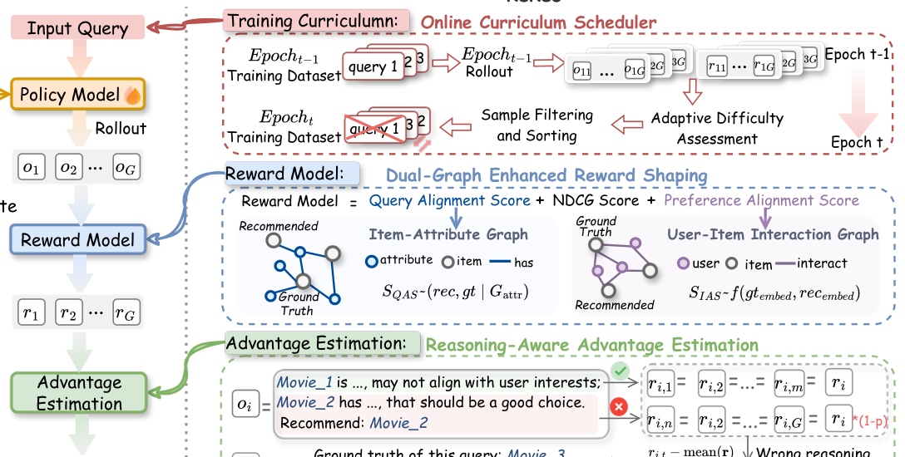

ReRec: Reasoning-Augmented LLM-based Recommendation Assistant via Reinforcement Fine-tuning (基于强化微调的推理增强大模型推荐助手)
- 会议/期刊: ACL 2026
- 作者与机构: Jiani Huang, Shijie Wang, Liangbo Ning, Wenqi Fan, Qing Li（香港理工大学）
- 推荐链路定位: 端到端生成式（LLM 直接输出推理链 + 推荐项）
- 研究方向: 大语言模型推荐 / 对话推荐与智能体
- 论文原文: https://arxiv.org/abs/2604.07851v1
- 开源代码: https://github.com/jiani-huang/ReRec
TL;DR (1分钟核心速览)
针对复杂自然语言查询（多跳、隐式条件、错误信息纠正）下 LLM 推荐助手多步推理能力不足的问题，本文提出 ReRec 强化微调框架：用双图增强奖励塑形（NDCG + 查询对齐分 QAS + 偏好对齐分 PAS）解决 NDCG 奖励过于稀疏的问题，用推理感知优势估计对错误推理段做 token 级惩罚，用在线课程调度按模型当前能力动态排序样本。在 RecBench+ 的 1 正 19 负候选排序协议下，Llama-3.2-3B 骨干在 Movie 域 Hard 子类从 0.644 提升至 0.729（+13.2%），且通用推理能力反升 21.6%。
Background & Motivation (背景与核心矛盾)
- 主流范式: 传统 MF/GNN 无法理解自然语言查询；LLM 推荐助手（TallRec、InteRecAgent、CRAG 等）多面向"推荐一部科幻片"这类简单模板化对话，仅需浅层属性匹配。
- 前人局限: ① 现有 CRS 基准查询推理深度浅，模型在"先识别电影→再定位主演→再推荐同主演作品"的多跳链路上失效；② 直接把 RFT（GRPO 类）搬到推荐上，奖励仅用 NDCG@K，与 ground-truth 不完全匹配但满足查询约束的合理推荐同样得 0 分，奖励极度稀疏，探索效率低。
- 核心洞察 (Key Insight): 推荐任务的"正确性"是多粒度的——满足查询约束（genre/actor）与符合协同偏好（相似用户共现）都应被视为部分正确；同时推理链的中间步骤质量与最终答案质量应当解耦监督。
- 本文切入点: 在 RFT 框架内同时改造奖励信号（稠密化）、优势分配（token 级细粒度化）与训练调度（动态课程化）三个环节。
Method (核心方法设计)
1. 整体框架 (Overall Architecture)
给定查询 \(q\)与候选列表，策略模型\(\pi_\theta\)采样\(G\)条含推理链与 \boxed{} 最终答案的响应；奖励模型对每条响应计算塑形奖励\(r_i\)，RAAE 将奖励按推理段回填到 token 级并归一化为优势\(A_{i,t}\)，代入 GRPO 式裁剪目标更新策略；每个 epoch 结束后，课程调度器依据上一轮 rollout 的平均逆奖励重估样本难度，过滤已掌握样本并按难度升序重排训练集。整个流程无需额外过程奖励模型或人工标注，仅复用已有 rollout 数据。
flowchart TD
A["用户复杂查询 q + 20 候选"] --> B["策略模型 πθ 采样 G 条响应"]
B --> C["双图奖励塑形: NDCG + QAS + PAS"]
C --> D["RAAE: 推理段级惩罚回填 token 优势"]
D --> E["GRPO 裁剪目标更新 πθ"]
E --> F["在线课程调度: 重估难度→过滤→升序重排"]
F --> B
2. 关键设计拆解 (Key Designs)
-
双图增强奖励塑形 (Dual-Graph Enhanced Reward Shaping)：痛点在于 NDCG 只认精确匹配，合理替代品与完全无关项同得 0 分。本文在物品-属性图上定义查询对齐分 \(S_{\text{QAS}}(p_i,gt)=\frac{|\mathcal{R}^{G_{attr}}_{p_i}\cap\mathcal{R}^{G_{attr}}_{gt}|}{|\mathcal{R}^{G_{attr}}_{gt}|}\)，在用户-物品交互图上用预训练 LightGCN 嵌入的余弦相似度定义偏好对齐分\(S_{\text{PAS}}\)，最终\(r_i=\text{NDCG}+w_1 S_{\text{QAS}}+w_2 S_{\text{PAS}}\)。直觉：前者奖励"满足硬约束的替代品"，后者奖励"协同信号上像正样本的替代品"，把零奖励的荒漠变成有梯度的地形。
-
推理感知优势估计 (RAAE)：GRPO 给整条响应同一优势，模型无法区分哪一步推理错了。本文将输出按段落切分为 \(K\)个推理段\(S_i=\{s_{i,1},\dots,s_{i,K}\}\)，若某段讨论了最终被推荐但非 ground-truth 的物品，则该段奖励打折：\(r_{s_{i,k}}=(1-w_{penalty})\cdot r_i\)（当\(p_i\neq gt\)且\(p_i\in s_{i,k}\)），否则保持\(r_i\)；再映射到 token 并做组内标准化\(A_{i,t}=\frac{r_{i,t}-\text{mean}(r)}{\text{std}(r)}\)。直觉：错误推理段被"连坐"降权，正确段保留高优势，形成段内对比梯度。
-
在线课程调度与训练目标：早期复杂查询全零奖励导致学不动。调度器用上一轮平均逆奖励 \(d_{t-1}=\frac{1}{G}\sum_i(1-r_i)\)度量难度，过滤\(d_{t-1}<\tau\)的已掌握样本，其余按难度升序组成新 epoch 数据。总目标即 GRPO 裁剪目标\(\mathcal{J}(\theta)=\mathbb{E}\big[\frac{1}{N}\sum_i\sum_t\min(h_{i,t}(\theta)A_{i,t},\text{clip}(h_{i,t},1-\epsilon,1+\epsilon)A_{i,t})\big]\)，其中\(h_{i,t}=\pi_\theta/\pi_{\theta_{old}}\)。负采样为候选池内 1 正 19 负（非 in-batch），推理时单次前向即可，无额外开销。
Experimental Setup & Evaluation Protocol (实验设置与评估协议)
- 数据集与预处理: RecBench+，按查询类别分布采样，训练/测试各 10,000 / 12,000 条查询，Movie 与 Book 两域独立训练。
| 数据集 | #Users | #Items | #Interactions | 稀疏度/密度 | 特征/场景说明 |
|---|---|---|---|---|---|
| RecBench+ Movie | 未披露 | 未披露 | 22,000 查询 | — | 显式/隐式/误导条件 + 兴趣/人口统计五类 |
| RecBench+ Book | 未披露 | 未披露 | 27,585 查询 | — | 四类（无人口统计类） |
- 数据划分与防穿越 (Splitting Strategy): 按查询类别分层采样划分训练/测试集（非时间切分）；RQ2 个性化实验显式选用训练集中未出现的条件类查询，避免泄漏。
- 排名评测协议 (Ranking Protocol):
Sampled Ranking，每查询 1 正 + 19 随机负，指标为 Accuracy（选中正样本比例）；RQ2 额外构造 3 个满足查询条件但非正样本的 hard negative。 - 对比基线与超参设置: 三类基线——LLM 骨干（Qwen-2.5-3B、Llama-3.2-3B、DS-R1-Distill-Qwen-7B、GPT-4o、DeepSeek-R1）、LLM-based CRS（TallRec、InteRecAgent、CRAG）、RFT 方法（GRPO、REINFORCE++、RLOO）。学习率 5e-6，group size 5，最大响应长度 768，\(w_{penalty}=0.3\)，\(w_1=w_2=0.01\)，\(\tau=0.1\)，KL 系数 0.01，clip\(\epsilon=0.2\)。
Key Experimental Results (实验关键数据)
1. 主实验对比 (Main Results)
Llama-3.2-3B-Instruct 骨干，Accuracy（bold 为最优）：
| 模型 | Movie-Simple | Movie-Medium | Movie-Hard | Movie-Interest | Book-Simple | Book-Medium | Book-Hard | Book-Interest |
|---|---|---|---|---|---|---|---|---|
| GPT-4o | 0.554 | 0.519 | 0.188 | 0.550 | 0.554 | 0.590 | 0.160 | 0.458 |
| DeepSeek-R1 | 0.537 | 0.510 | 0.200 | 0.459 | 0.562 | 0.530 | 0.279 | 0.505 |
| TallRec | 0.537 | 0.533 | 0.284 | 0.571 | 0.563 | 0.591 | 0.251 | 0.477 |
| CRAG | 0.560 | 0.531 | 0.195 | 0.557 | 0.560 | 0.592 | 0.211 | 0.518 |
| GRPO | 0.686 | 0.600 | 0.644 | 0.651 | 0.664 | 0.757 | 0.713 | 0.786 |
| REINFORCE++ | 0.699 | 0.623 | 0.597 | 0.676 | 0.661 | 0.768 | 0.697 | 0.795 |
| RLOO | 0.693 | 0.609 | 0.614 | 0.627 | 0.660 | 0.774 | 0.704 | 0.794 |
| ReRec | 0.748 | 0.700 | 0.729 | 0.719 | 0.671 | 0.782 | 0.750 | 0.811 |
| Improv. (vs 次优) | +7.0% | +12.4% | +13.2% | +6.4% | +1.1% | +1.0% | +5.2% | +2.0% |
Qwen-2.5-3B 骨干上 ReRec 同样全面领先（Movie-Hard 0.547 vs RLOO 0.529；Book-Interest 0.746 vs 0.716），但 Book-Simple 略低于 RLOO（0.555 vs 0.567），说明小骨干在简单任务上收益不稳定。
2. 消融实验 (Ablation Study)
| 配置 | 性能趋势 | 说明 |
|---|---|---|
| ReRec (full) | 最高 | 三模块齐备 |
| w/o RAAE | 下降最大 | 推理段监督是核心增益来源 |
| w/o 双图奖励塑形 | 次大下降 | 稀疏奖励导致探索不足 |
| w/o 课程调度 | 小幅下降 | 主要影响收敛稳定性 |
3. 关键实验发现 (Key Findings)
- 推理监督 > 奖励稠密化 > 课程调度：消融中移除 RAAE 掉点最多，说明"哪一步推理错了"的段级信号比"答案对不对"的标量信号更关键；\(w_{penalty}\) 在 0.3 处达峰，过大惩罚反而损害最终性能，印证"惩罚需保留正确段优势"的设计直觉。
- 复杂查询收益远大于简单查询：Movie-Hard 上 ReRec 相对未训练 Llama 提升 440%（0.729 vs 0.029 量级），而 Simple 类仅 +7%，说明 RFT 主要补的是多跳/纠错推理短板，而非基础属性匹配。
- RFT 优于 SFT 的能力保留性：SFT 后 Reasoning 与 Knowledge 分别掉 15.7% 与 80%，而 ReRec 四维能力几乎无损且 Reasoning 反升 21.6%；跨域迁移（Movie→Book）Llama 骨干从 0.168 升至 0.494（+181%），跨任务迁移到序列推荐达 SASRec 的约 88%，证明学到的是可迁移的推理模式而非域内记忆。
Highlights & Limitations (亮点、对比与审稿批判)
- 与代表作对比 (vs. Prior Work): 相比 TallRec/CRAG 等 SFT 式指令微调，ReRec 用 RFT 自探索避免灾难性遗忘；相比 GRPO/RLOO 等通用 RLVR 方法，本文的关键差异是把奖励从"单一 NDCG"扩展为"图结构上的多粒度对齐"，并把优势从"响应级"下沉到"推理段级"，这两点直接对应推荐任务的领域特性。
- 可迁移亮点: ① 用预训练轻量 GNN（LightGCN）嵌入余弦相似度作为奖励的"软标签"，可低成本移植到任何 LLM 排序/生成任务的奖励设计中；② 用上一轮 rollout 平均逆奖励做难度估计的在线课程，无需额外模型，适合任何 RLVR 训练管线。
- 审稿级局限批判: ① 评测仅为 1 正 19 负的 Sampled Ranking + Accuracy，未报告 NDCG@K 或 Full-Ranking，且负样本随机采样会高估绝对精度，与真实全库排序场景存在差距；② 仅支持单轮查询，多轮对话与上下文累积未覆盖（作者自述）；③ 双图奖励依赖物品-属性图与交互图的构建质量，冷启动物品属性缺失时 QAS/PAS 会退化，论文未做该鲁棒性分析。
Rating (四维评分)
- 方法创新性 (Novelty): ⭐⭐⭐⭐ （奖励塑形与段级优势估计的组合针对推荐任务特性做了实质性改造，但各组件单独看均为已有思想的领域适配）
- 评估协议与实验扎实度 (Protocol & Experiments): ⭐⭐⭐ （双域五类查询 + 跨域/跨任务/能力保留实验较全面，但 Sampled Ranking 协议偏弱、缺 Full-Ranking 与显著性检验）
- 写作与数学规范度 (Clarity & Rigor): ⭐⭐⭐⭐ （三模块公式定义清晰、超参与实现细节完整，RAAE 的段切分与奖励回填逻辑表述严谨）
- 工业落地与复现价值 (Industrial & Practical Value): ⭐⭐⭐⭐ （代码开源、仅需 3B 骨干与 2×H20、无额外过程奖励模型，推理单次前向，落地成本可控）